Week 14: Writing (and Evaluating) the Research Report
Assistant Professor | School of Information Science
Housekeeping
Overview
- Course Schedule and Remaining Assignments
- Final Research Report and Presentation: Due May 1
- Evaluating Research Validity
- Ch. 23: Evaluating Research Validity I (pp. 417-432)
- Ch. 24: Evaluating Research Validity II (pp. 433-445)
- Appendix E: Questions for Evaluating Research Validity (pp. 556-558)
- Writing the Research Report
- CH. 26: Writing the Research Report (pp. 456-474) (GML) METHOD: 460-463
- APPENDIX F: Making APA Tables and Figures (pp. 559-565) (APA CH 7 pp. 195-250)
- APPENDIX G: Writing About Your Results (pp. 566-570)
- Workshop: Peer Review and Design Feedback
Where we’re at
N = 27


N = 46


N = 99


N = 147


N = 108


Project Timeline
- Only 3 weeks left! Everyone is approved and all surveys have launched.
- Group should be working on front end (literature review, hypotheses, methods)
- Final Report must include:
- APA format
- Introduction, Rationalize, Lit Review, RQs/Hs, Methods, Results, Discussion (Implications, Limitations, Future Research), Conclusion, References, Any Relevant Appendices
- Final Conference-Style Presentation must include:
- Visual aid
- 10 minute max
- Each member should speak
- Brief Q&A at the end
Helpful Information
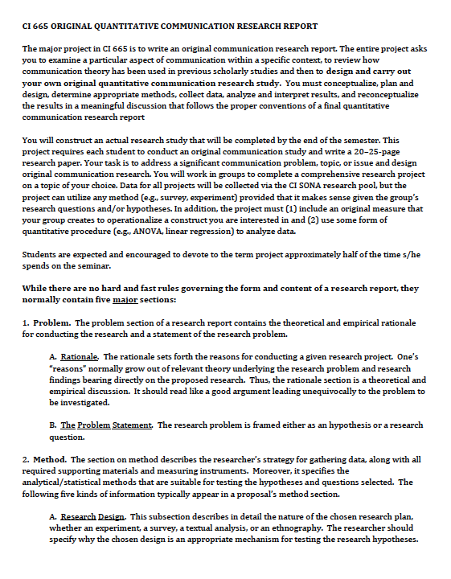What’s Next?

Progress!!
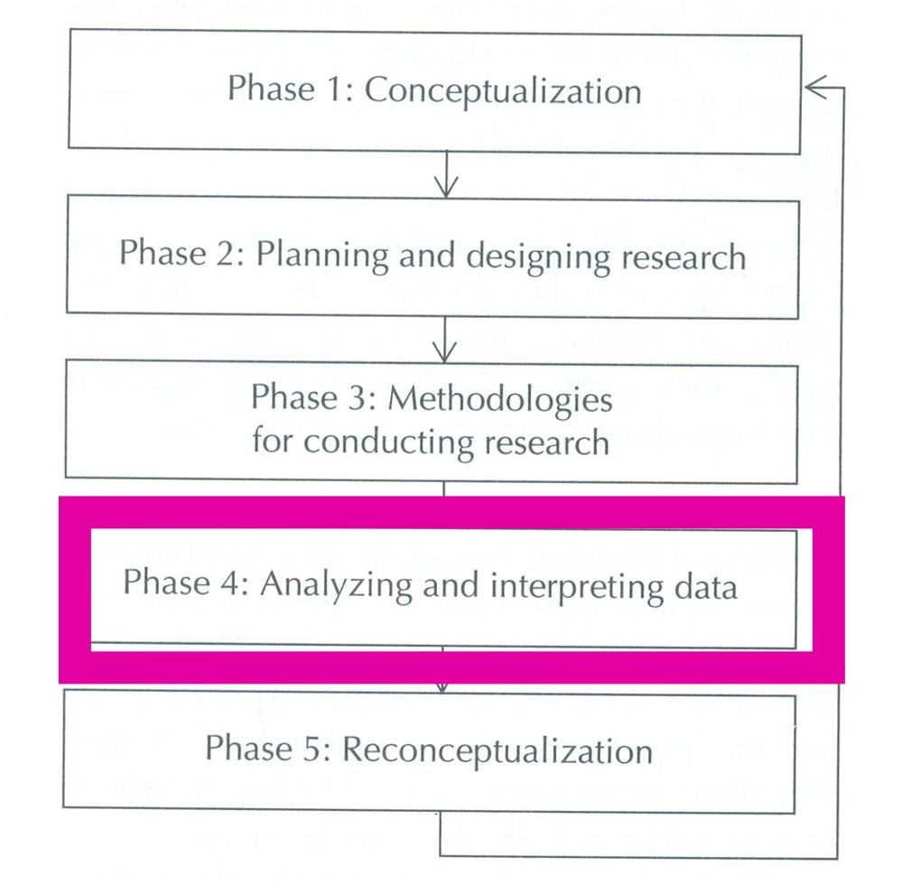Evaluating Research Validity Part I
Frameworks for understanding
The Cook and Campbell (1963/1966/1979) Framework Shadish, Cook, and Campbell (2002)
Know these names, especially if you are doing experimental work
4 Key Dimensions:
- Measurement Reliability and Statistics
- Internal Validity
- Measurement Validity of the Constructs
- External Validity
19 QUESTIONS
- Q1-11 chapter 23
- Q12-Q19 chapter 24
8 RATING SCALES
- Figure 23.3 - p.426
- Figure 23.4 - p. 429
- Figure 24.1 - p. 434
- Figure 24.3 - p. 438
11 Questions: Analysis of Design and Methods
Q1: What are the key independent variables (LOM)?
Q2: What are the key dependent variables (LOM)?
Q3: What are the main RQs and/or RHs?
Q4: What is the research approach?
Q5: What is the general design classification (randomized, etc.)?
Q6: What is the specific design/approach?
Q7: Is the measurement reliability for each key variable acceptable?
Q8: Is the evidence of measurement validity for each key variable acceptable?
11 Questions: Analysis of Design and Methods
Q9: What is the overall rating of measurement reliability and statistics?
Q10: Are the comparison groups equivalent (random assignment)?
Q11: What is the evaluation of the control of extraneous experience and environment variables?
Evaluating Research Validity Part II
8 More Questions: Analysis of Design and Methods
What is the evaluation of the . . .
Q12: construct validity of the intervention (i.e., did the manipulation work?
Q13: construct validity of the outcome measures (DVs) and any attribute IVs?
Q14: overall population external validity?
Q15: overall ecological external validity?
Q16: extent to which important participant subgroups were tested and/or compared?
8 More Questions: Analysis of Design and Methods
Q17: Was there adequate peer review?
Q18: Do the authors adequately present the case for the theoretical importance or practical relevance of their RQs and design?
Q19: Do the authors interpret their findings adequately? Were the title, abstract, and discussion clear and accurate (as opposed to overstated and misleading) given the evaluation of the several aspects of research validity?
Summation: Appendix E
Q1 - Q6
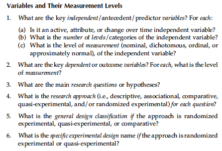
Q7 - Q9, Q12 - Q13
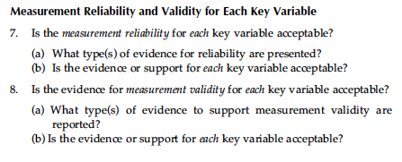
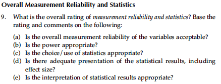
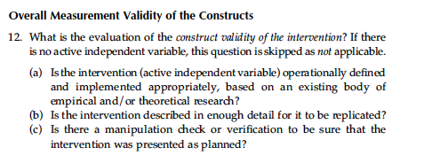
Q10 - Q11
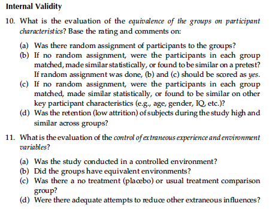
Q14 - Q16
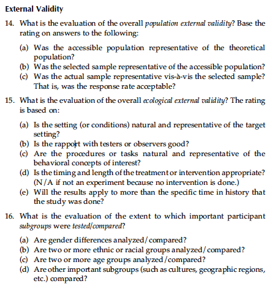
Q17 - Q19
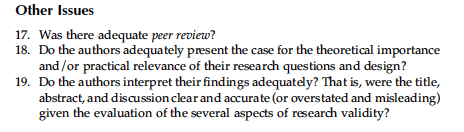
Writing the Research Report
The outcome of research is the GENERATION of more RESEARCH QUESTIONS
Knowledge is power!
Anatomy of the Research Report
- Title (10-12 words max)
- Abstract (no more than 120 words)
- Introduction/Literature Review (ends with RQs)
- Method (participants, measures, procedure, design and analysis)
- Results
- Discussion (Implications, Limitations, Future Directions)
- References
- Appendices
Titles
- Keep it brief (10-12 words)
- Be direct; Summarize key ideas
- Articles with stylistic cues in titles were cited less frequently
Keating, D. M., Richards, A. S., Palomares, N. A., Banas, J. A., Joyce, N., & Rains, S. A. (2022). Titling practices and their implications in communication research 1970-2010: Cutesy cues carry citation consequences. Communication Research, 49(5), 627-648. https://doi.org/10.1177/0093650219887025
Titles
“This article examines the 408 articles titled ”Should I Stay or Should I Go?” and asks why there are so many articles with the same title. The academic culture of publication pressure can lead to researchers choosing creative titles, including popular song titles, to stand out from the crowd. Furthermore, risk assessment leads researchers to choose the same songs as others, because well-known, easy-to-understand cultural references are better rewarded than more obscure references. The collective outcome of this, many researchers choosing the same title for their articles, reflects the mass production of cultural products, wherein creativity is standardized and panders to the largest possible audience.”
Nieuwenhuis, J. (2022). Another article titled “Should I Stay or Should I Go?” or, the mass production of academic research titles. The Information Society, 1-7. https://doi.org/10.1080/01972243.2022.2152916
Abstract
- Often the only part that gets read!
- Try not to overlook it
- In many ways, it is the most important part of your article
The Front End
- Introduce the problem first
- Have a clear and distinguished project statement
- Include the goals of your study
- Make it clear how the study contributes to new knowledge
- Include a range of literature:
- What supports the Hs?
- What does NOT support the Hs?
- Find the FOCUS and lead with this
- Testing theory? Lead with theory.
- Effects in a context? Lead with what we know in the context.
Method
Ultimate purpose is to instruct the reader on exactly what was done to allow them to replicate the study under identical conditions.
- State total sample size
- Include demographics (age, gender, race/ethnicity, other relevant info)
- State how they were selected
- Can include power to support sample size if calculated
- Describe operationalization of IVs and DVs
- At a minimum, include reliability, means, and SDs
- If there is room, validity evidence is nice too
- Try to have a sample item
- For measures YOU developed:
- Pilot testing
- Factor Analysis and results
- Design statement if necessary
- EX: Posttest only control group design
- EX: A 2 x 4 between subjects design
- Discuss experiment in detail
- What was manipulated and how?
- Remember that goal is replication
- What did participants do?
- IRB approved
- Gathered consent
- Answered questions
- What tests do you plan on running?
- Missing data?
Results
- SUMMARIZE the analyses
- Support or show lack of support for Hs and RQs
- Can include assumptions for tests
- Normality, linearity, equality of variances
- Include the relevant statistical logic (pp. 567)
- Value of the statistic, dfs, p value, effect size
- Avoid making comparisons or connecting to literature
t test
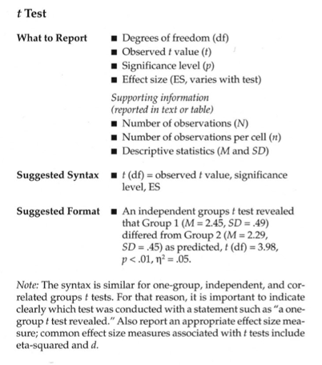ANOVA
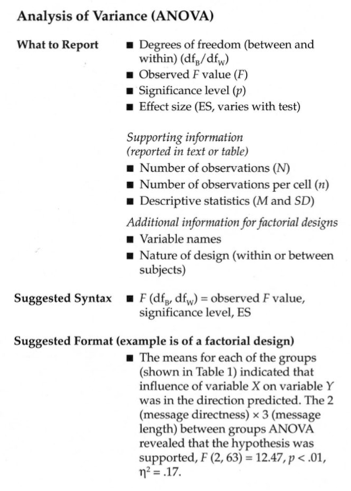Correlations
There was a [negative or positive] correlation between the two variables, r(df) = [r value], p = [p-value]
EX: There was a negative correlation between the two variables, r(33) = -.37, p = .029.
Regression
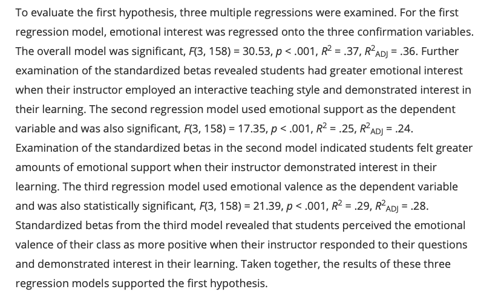Interpreting Results (Appendix G)
4 Things to consider with any test:
- Decide whether to reject the null hypothesis
- What is the direction of the effect?
- What is the size of the effect?
- Practical, clinical, or social significance?
Discussion
- Main purpose is to situate results in the context of the literature; relate them to what we know
- Start with a brief review of the Hs and RQs and whether they were supported
- Stay within the confines of your results
- Avoid overexplaining or making sense of something that was not tested
- “May cause”
- “Appear to influence”
- Do not use “approaching significance” or “proves”
- A good approach to try is to explicitly compare results of your study with the effect sizes reported in relevant previous studies.
- Hierarchy of importance:
- Substantive significance
- Scientific significance
- Threats due to:
- Internal Validity
- External Validity
- Measurement Validity
The key is to make sure limits and future directions are meaningful:
- Follow up questions
- New or refined procedures
- Transfer from lab to real world
- Propose new topics
Discussion

Conclusion
- What’s the next step?
- Sum up memorably
References
- APA format!
- If you collect in EndNote or Zotero, it can spit out the reference list for you.
I like to find the source on Google Scholar, use their generator, fix it, then grab the doi.
Presenting Results Visually
Can use Appendix F but APA manual is better if you have it (Ch. 7 - pp. 195-250)
Visual Elements
- CLARITY should be the primary concern of ALL Tables and Figures
- If a figure does not contribute to a reader’s UNDERSTANDING in a meaningful way – leave it out!
- If formatted correctly, visual data can be POWERFUL
- Purdue OWL: APA Tables and Figures Checklist
Tables
- Construction of the Table
- Table Numbering
- Table Titles
- Table Headings
- The Body of the Table
- Notes to a Table
- Examples (p. 563)
Table Tips
- Be selective
- Combine where possible
- Only discuss most important parts in the text
- Work smarter where possible!
- Can use Excel to organize
- Sometimes APA will organize
Example Table
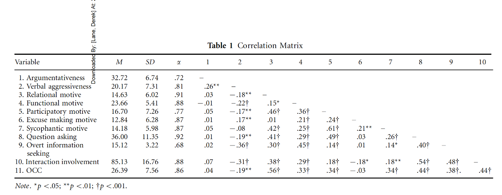Myers, S. A., Edwards, C., Wahl, S.T., & Martin, M.M. (2007). The relationship between perceived aggressive communication and college student involvement. Communication Education, 56, 495-508.
Example ANOVA Table
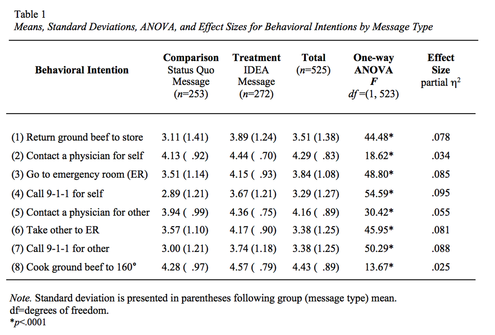Example Regression Table
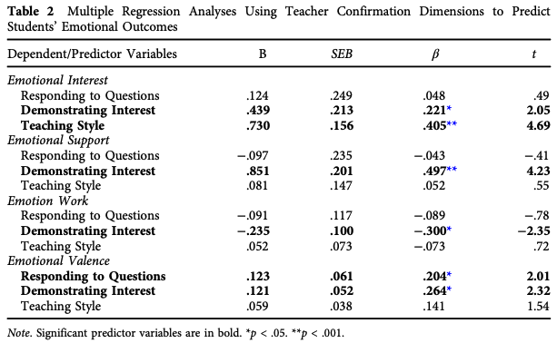Goldman, Z. W., & Goodboy, A. K. (2014). Making students feel better: Examining the relationships between teacher confirmation and college students’ emotional outcomes. Communication Education, 63(3), 259-277
Figures
- Should be easy to read and interpret!
- Avoid any special effects
- Example (p. 564)
Peer Review
Busting the mythology of Reviewer 2
Important Considerations
- It is a privilege to be asked to review - take it seriously!
- Rely on what you know
- Rejecting an article is okay
- It honestly makes the Editor’s life easier
- Have a good reason for it
- Rejection is grounded in changes that cannot be addressed in a revision
- The worst thing for an author to feel that they could have reconciled the feedback
Example Reviews
- Revise and Resubmit -> Rejection
- Rejection
- Acceptance
Tips to be a good reviewer:
- Use constructive and descriptive feedback
- Offer concrete suggestions
- Acknowledge their work!
- Provide examples
- Focus mostly on big pictures issues
Flip Side: Responding to Reviewers!
- Be transparent
- Address ALL concerns
- Do what they ask unless there is a really good reason not to
- Have citations ready
- Highlight changes in manuscript AND letter
- Make them feel appreciated
If you get to this point, it should be accepted
Example Response
This is the hidden curriculum. I learned how to do this when I took qualitative methods as a second year PhD student from this same process.
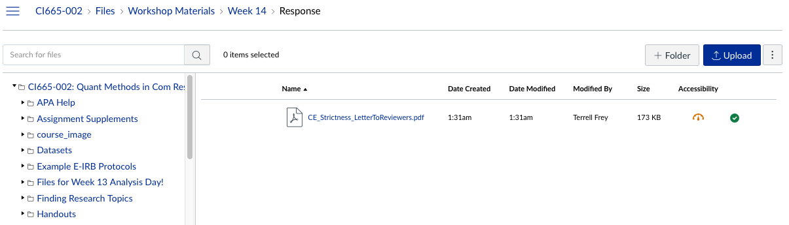Memes!
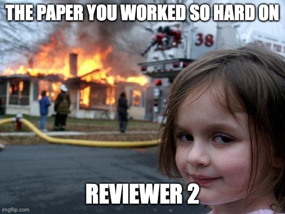Remember!
Good researchers support and justify they decisions they made along the way.
Wrap Up and What’s Next??
After having your studies posted on the CI SONA webpage for at least a week, you should now have some data to begin exploration. This class period will be very applied – demonstrating how to download your data from Qualtrics, organize the database, clean the data, identify outliers, gather descriptive, and prepare everything for analysis.
I’m turning you loose!